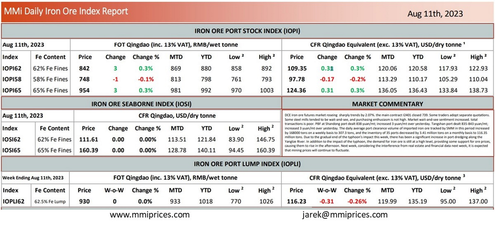

DCE iron ore futures market roseing sharply trends by 2.07%. the main contract I2401 closed 739. Some traders adopt separate quotations.Some steel mills tended to be wait-and-see, and purchasing enthusiasm is not high. Market wait-and-see sentiment increased. total transactions is poor. PBF at Shandong port dealt 838 yuan/mt; increased 3 yuan/mt over yesterday. Tangshan port dealt 835-843 yuan/mt; increased 3 yuan/mt over yesterday. The daily average port clearance volume of imported iron ore tracked by SMM in this period increased by 168000 tons on a weekly basis to 307.3 tons, and the inventory of 35 ports decreased by 3.41 million tons on a monthly basis to 116.35 million tons. Due to the gradual end of the typhoon’s impact this week, there has been a significant increase in port dredging along the Yangtze River. In addition to the impact of the typhoon, the demand for iron ore is still at a high level, providing some support for ore prices, causing them to rise in the afternoon. Next week, considering the interference from real estate and financial data next week, it is expected that mining prices will continue to fluctuate.

Download PDFSource: Metals Market Index (MMi)